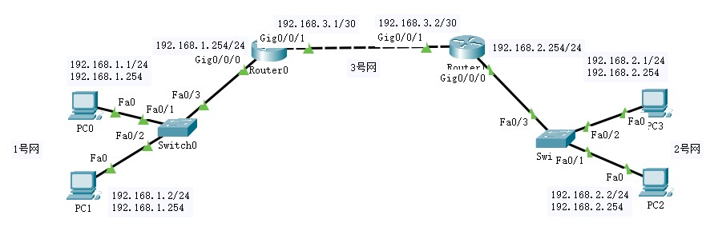
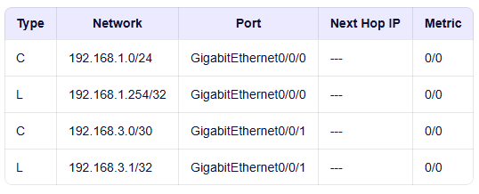
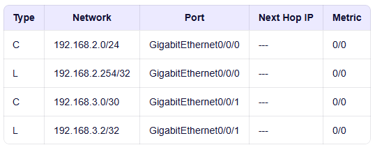
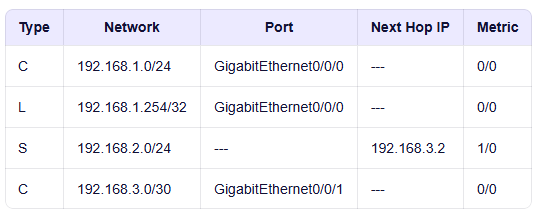
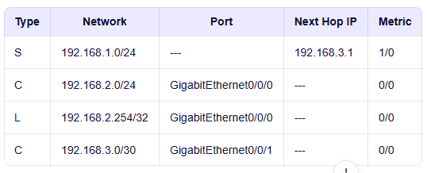
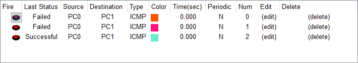
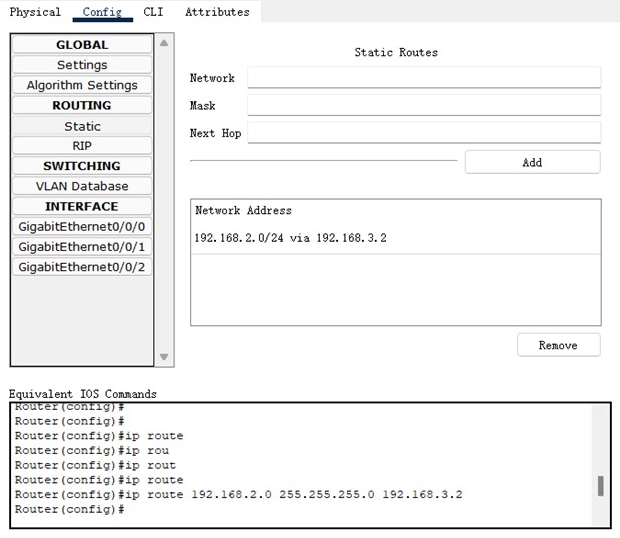

一旦网络结构改变，必须手动修改
只要网络拓扑不变化，这条路由就一直有效
不需要像动态路由那样交换协议报文，节省CPU和带宽
不对外广播路由信息，更隐蔽
网络结构简单、设备少，路由路径固定
手动配置几条路由即可实现全网互通，无需复杂的动态路由协议
0.0.0.0./0
特殊的静态路由
需要精确控制某些数据走特定线路（如安全策略、负载分离）
路由器性能较弱，无法运行复杂的动态路由协议（如RIP、OSPF）
ip route prefix mask ip
Router0 上配置去往 2号网 的静态路由（下一跳 192.168.3.2）
Router1 上配置去往 1号网 的静态路由（下一跳 192.168.3.1）

Router(config)# inter g0/0/0 Router(config-if)# ip address 192.168.1.254 255.255.255.0 Router(config-if)# no shutdown Router(config)# inter g0/0/1 Router(config-if)# ip address 192.168.3.1 255.255.255.252 Router(config-if)# no shutdown
Router(config)# inter g0/0/0 Router(config-if)# ip address 192.168.2.254 255.255.255.0 Router(config-if)# no shutdown Router(config)# inter g0/0/1 Router(config-if)# ip address 192.168.3.2 255.255.255.252 Router(config-if)# no shutdown


Router>en Router#conf ter Router(config)#inter g0/0/1 Router(config)# ip route 192.168.2.0 255.255.255.0 192.168.3.2
Router>en Router#conf ter Router(config)#inter g0/0/1 Router(config)# ip route 192.168.1.0 255.255.255.0 192.168.3.1



下方会显示相应的命令
选择 static 标签页设置静态路由 - 可视化
